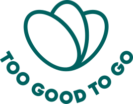

Strategic analysis · GEM1STR001
Platform economics, horizontal & vertical integration, and the fight against food waste
Prof. Bertrand Quélin · HEC Paris · October 2026
Visual support deck — aligned with the detailed strategic analysis plan
Claude (Anthropic), Cursor — sources: last slide.
Research: [ · ] · Analysis: [ · ] · Slides: [ · ]
Launch · Surprise Bag concept
European expansion
Tech acquisitions (e.g. CodaBene)
First profitable year
TGTG Platforms · Parcels · dynamic pricing
19 countries · B2B upsell
Sources: TGTG impact reports, company releases, group strategic analysis plan.
How can Too Good To Go use horizontal and vertical integration to consolidate the network effects of its two-sided platform, while securing financial profitability in the face of disintermediation risks and pressure from large grocery and retail players?
Short answer: become the surplus-food infrastructure (SaaS + data + upstream supply), not only a matching app — to lock in partners and diversify revenue beyond per-bag commissions.
Addresses: marketplace commission dependence
Addresses: local density & internalization threat
Addresses: closing-time supply–demand balance
More consumers → higher sell-through for merchants → richer partner base → better consumer choice — primarily local (geo-density).
Habit, favorites, trust, and operational integration (pickup windows) — strengthened by B2B tools.
Parallel apps or informal channels; chains may internalize surplus sales — core disintermediation risk.
Implication: horizontal scale (coverage) and vertical integration (software, data, upstream supply) jointly aim to make TGTG the default surplus infrastructure, not a listing app.
Industry attractiveness is moderate: low direct rivalry and buyer power, offset by a high substitute threat (meals, delivery, in-store markdowns).
| Force | Intensity | Strategic read |
|---|---|---|
| Threat of new entrants | Moderate | Low technical barriers to launch an app; high walls from local network density and scale. |
| Bargaining power of suppliers (stores) | Low–moderate | Independents have limited leverage; national retail and hotel chains carry moderate power. |
| Bargaining power of buyers (users) | Low | Highly fragmented demand; zero signup cost, but habit and local choice create stickiness. |
| Threat of substitutes | High | QSR, delivery apps, in-store discounts, and waste routes compete for the same wallet. |
| Rivalry among existing competitors | Low | First-mover in the category; limited direct peer set at global scale. |
Substitutes cap willingness to pay; horizontal scale and vertical integration defend against entrant and chain bypass.
| Trade-off (cost to consumer) | WTP driver | Structural advantage (TGTG) |
|---|---|---|
| Lower predictability (mystery bag) | ~70% discount vs full price | Zero COGS — merchants supply existing inventory |
| Time constraint (pickup before closing) | Eco-responsible consumption / impact | No kitchen or delivery cost (100% customer pickup) |
TGTG occupies the surplus-food liquidity layer — marketplace utility economics, not restaurant or logistics head-to-head competition.
TGTG Platforms (CodaBene): expiry and in-store surplus in supermarket IT — from reactive resale to proactive store management.
Direct capture of FMCG factory overstock before retail channels — supply beyond store closing hours.
In-house core IT; dynamic pricing algorithms to optimize clearance at closing time.
Vertical moves reduce reliance on marketplace fees, raise switching costs for enterprise partners, and address disintermediation by owning the operational layer — not just the consumer interface.
R1 — Package TGTG Platforms as recurring SaaS for grocery giants (beyond per-bag commission).
R2 — Master agreements with regional supermarket chains in North America to reach critical mass and preempt internal marketplaces.
R3 — Generalize dynamic pricing to maximize bag sell-through and unit economics for merchants and TGTG.
TGTG created the Surprise Bag category: 125M users, 175k partners, measurable impact, and break-even in 2023.
Sustainable profit still requires locking in network effects against disintermediation and large-account power.
Next step: earn from daily surplus-chain services — in-store SaaS, targeted geographic scale, and algorithmic pricing — to align network, margin, and mission.
Too Good To Go — impact reports (meals saved, CO₂), corporate website & press releases.
B-Corp certification — public TGTG documentation.
Garot law (France) — anti food-waste framework.
EU directives — food-waste reduction targets.
CodaBene / TGTG Platforms acquisition — press and corporate communications.
TGTG Parcels — upstream FMCG extension (trade press).
Course GEM1STR001 — Prof. Bertrand Quélin, HEC Paris.
Group strategic analysis plan — Too Good To Go (2026).